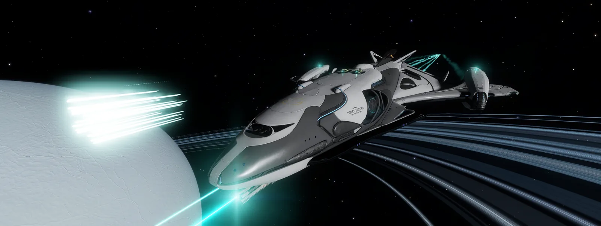
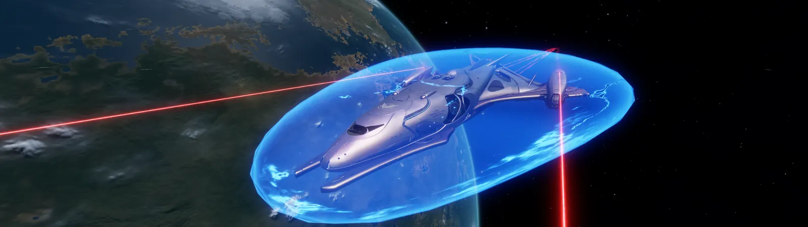
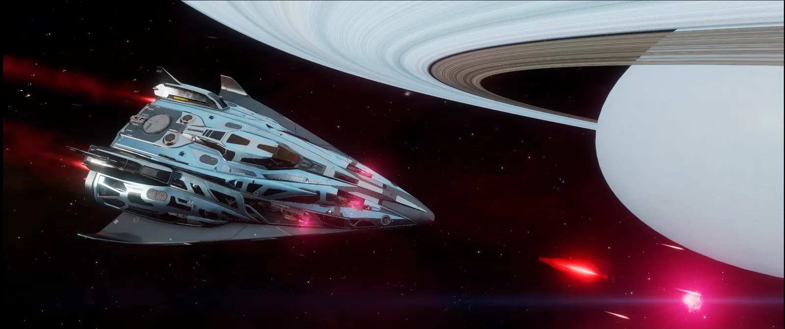
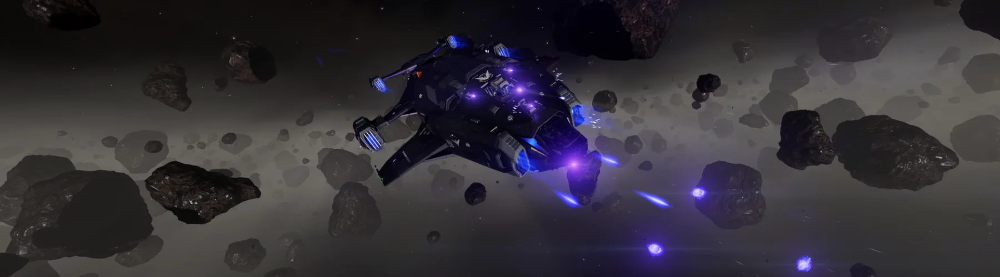

Mongrel Hangar
Ship Catalogue
Squadron-tested builds, member favorites, and practical engineering guidance for Commanders who want a proven starting point—or something new to experiment with.
Published Builds0
Contributors0
Roles Covered0
Build SourcesEDSY · Coriolis
Featured Hangar
Ships With a Reputation
A visual preview of several named Mongrel ships. Published builds link directly to their EDSY or Coriolis setup, while the full catalogue below adds role, engineering level, and squad-specific tags.



Member Builds
Browse the Hangar
Search by ship, build name, commander, or role. Each entry can include a screenshot, a short description, Engineering Level, squad tags such as Open-Ready, and one or more direct links to the full external build.
No builds have been published yet.
The catalogue is ready for real squadron builds. We can begin adding them to data/ships.json whenever members are ready to contribute.
Engineering Desk
Turn a Blueprint Into a Ship
The Engineering Desk now links into the Mongrels knowledge library: practical starter guidance, deeper build theory, and reference notes that also power Ask the Mongrels.
Engineer Unlocks
A clean progression guide for unlocking important Engineers, including prerequisites and where each Engineer fits into common builds.
Planned GuideModification Library
Plain-language explanations of popular engineering choices, experimental effects, tradeoffs, and when each modification makes sense.
Open GuidesMaterials Planner
Eventually, a selected ship build can show the materials needed to reproduce its engineering and help a member prepare a shopping list.
Future ToolSquad Recommendations
Quick-reference advice from experienced Mongrels for combat, trade, exploration, AX, mining, and specialty engineering.
Read the LibraryShare Your Ship
Built Something Worth Flying?
For now, builds can be added manually. Later, the member area can support direct submissions with screenshots, notes, and EDSY or Coriolis links for leadership to review.